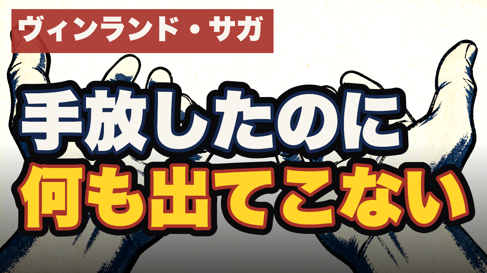

まだ何もアップしていません。承認をもらってから、予約投稿（非公開＋予約）で上げます。公開ボタンは最後まであなたが押します。
承認いただいた痛みの一文がそのまま前半です（痛み先頭型）。

左上に作品名タグ、白＋黄で二行。360pxでも読めることを確認済み。
読者ゲート74点（合格70・完走・いいねあり）。「冒頭とスマホのところは完全に自分」との反応でした。
| 本編 | 尺557秒／ピーク-4.6dB／幕間BGM-41.1dB／シーン境界28か所すべて黒落ちなし／字幕29シーンOK／冒頭0-8秒に作品名＋卦名 |
|---|---|
| ショート | 尺57.1秒／発音6シーン一致／字幕カバレッジ全シーン85%以上／絵が動いている／黒落ちなし／左右対称すぎる絵なし |
| 事実 | 作品事実12件・易経11件をすべて一次情報で照合（content/074/fact_check.md） |
| 法務 | 識別監査27カット全「不明」＝キャラも作品も特定されない |
| 読者 | 本編82点／ショート74点（いずれも基準を見せていない読者・合格70） |
この2本をアップロードしていいですか。OKなら、非公開＋予約で上げて、Studioで最終確認できる状態にします（公開ボタンは押しません）。
ショートの声を先に直したい場合は「声を直してから」と言ってください。
第54話 / content/074 / 鼎（第50卦）/ 本編9分17秒＋ショート57秒 / 2026-08-15